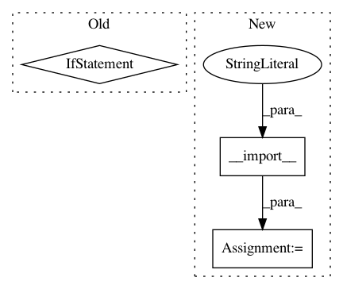

abbfdc5b04ec1824e42cebb472626d234ff7bd36,scripts/speaker_embedding.py,,test,#Any#Any#Any#Any#Any#,383
Before Change
X, y = generate_test(protocol, subset, feature_extraction,
duration, min_duration=min_duration)
fX = sequence_embedding.transform(X, batch_size=batch_size)
if distance == "angular":
cosine_distance = pdist(fX, metric="cosine")
y_distance = np.arccos(np.clip(1.0 - cosine_distance, -1.0, 1.0))
else:
y_distance = pdist(fX, metric=distance)
y_true = pdist(y, metric="chebyshev") < 1
fpr, tpr, thresholds = sklearn.metrics.roc_curve(
y_true, -y_distance, pos_label=True, drop_intermediate=True)
After Change
for key, preprocessor in config.get("preprocessors", {}).items():
preprocessor_name = preprocessor["name"]
preprocessor_params = preprocessor.get("params", {})
preprocessors = __import__("pyannote.audio.preprocessors",
fromlist=[preprocessor_name])
Preprocessor = getattr(preprocessors, preprocessor_name)
protocol.preprocessors[key] = Preprocessor(**preprocessor_params)
// -- FEATURE EXTRACTION --
In pattern: SUPERPATTERN
Frequency: 3
Non-data size: 3
Instances
Project Name: pyannote/pyannote-audio
Commit Name: abbfdc5b04ec1824e42cebb472626d234ff7bd36
Time: 2017-01-09
Author: bredin@limsi.fr
File Name: scripts/speaker_embedding.py
Class Name:
Method Name: test
Project Name: pyannote/pyannote-audio
Commit Name: abbfdc5b04ec1824e42cebb472626d234ff7bd36
Time: 2017-01-09
Author: bredin@limsi.fr
File Name: scripts/speaker_embedding.py
Class Name:
Method Name: tune
Project Name: RaRe-Technologies/gensim
Commit Name: 48c422ce954ca57294a9c970c515b10d787f8013
Time: 2011-04-03
Author: radimrehurek@seznam.cz
File Name: src/gensim/__init__.py
Class Name:
Method Name: